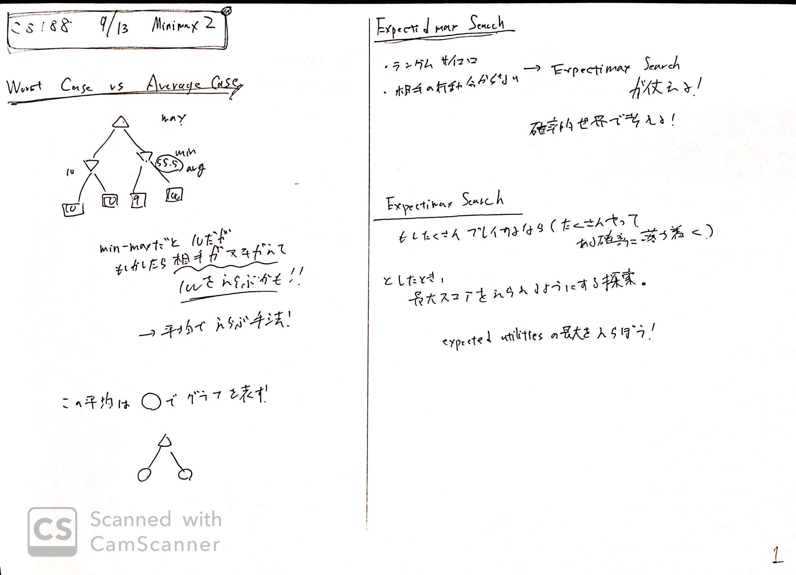
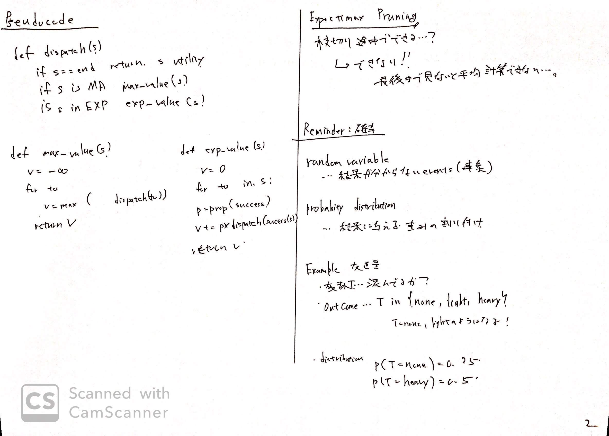
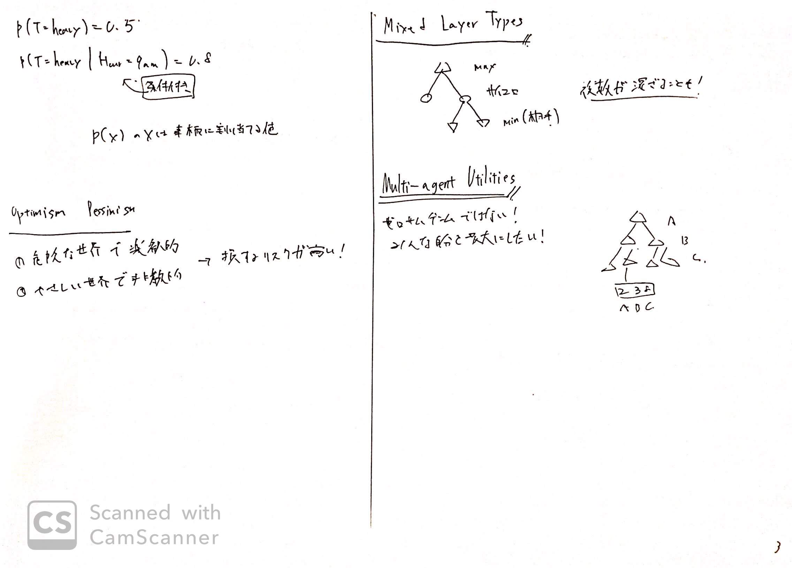
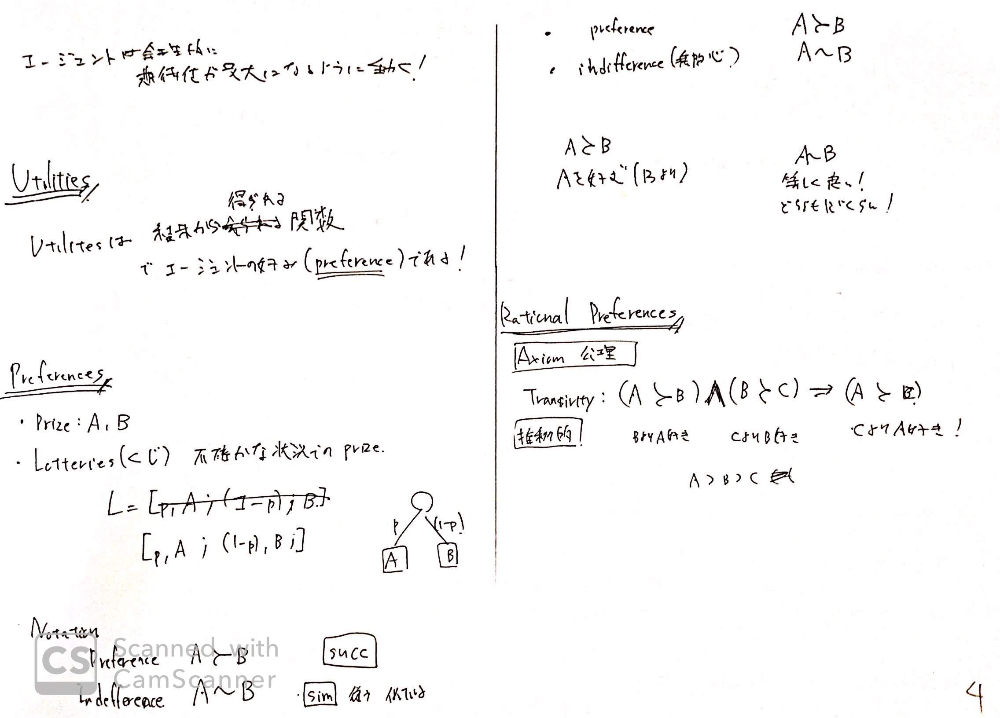
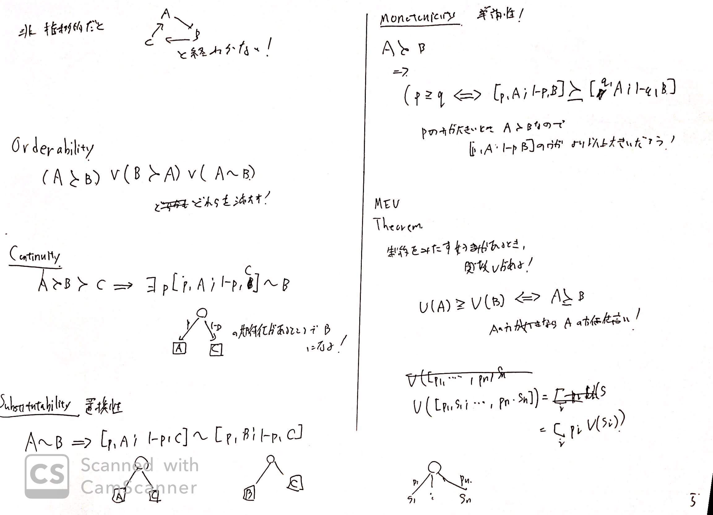
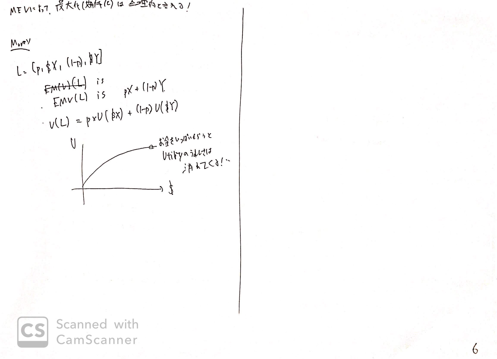

リンク
https://inst.eecs.berkeley.edu/~cs188/fa18/index.html
https://www.youtube.com/watch?v=n3A29GEzC6g
画像






内容
Expectimax Search
前回はMinMax探索を行った。
ゼロサムゲームにおいて、相手は自分の最小化を行ってくる。
自分はmax, 相手はminを行う。
ここで、相手が必ずminを行うとは限らない。
予測できない可能性もあるからである。
よって、確率的な要素を取り入れて、期待値の最大化を行うような探索を行う。
確率の思い出し
random variableは、結果がわからない事象を表す。
probability distributionは、random variableに与える確率分布の割付である。
よって、交通量なら
変数$T$は 混んでいるか？の状態を表す。
$T$はnone, light, heavyの３状態を取る。
distributionとしてP(T=none) = 0.3のように確率を当たえる。
条件付き確率は$P(T= none | time =8am) = 0.8$のように表す。
複数レイヤー
二人だけではなく、複数のプレイヤーが自分の報酬を最大化しようと行動することがある。
この場合も、MinMaxのように考えられる。
Utility
Utilitiは、結果から得られる関数であり、エージェントの好みを表す。
つまり、これによって、エージェントは動きを変える。
Preference
- Prize: A, B
- Lotteries
- L = [p, A; (1-p), B;]
- のように書くとする。
これは、不確かな状況における、くじ引きのようなLを表す。
ここからのNotation(表記)として
Aの賞品のほうが好みなら、$A \succ B$と表す。
また、同じぐらいなら$A \sim B$と表す。
Axiom(公理)
Transivity(推移則)
$(A \succ B) \cap (B \succ C) \Rightarrow (A \succ C) $
これがないと永遠にループしたりする
Continuity
$A \succ B \succ C \Rightarrow {\exists} p[p, A; 1-p, C] \sim B$
Substinuinability
$A \sim B \Rightarrow [p, A; 1-p, C] \sim [p, B; 1-p, C]$
MEU Maximun Expected Utility
上記の公理を満たす好みがあるとき、関数$U$が定義できる。
$U(A) \geq U(B) \Leftrightarrow A \succ B$
$U([p_i , s_i]) = \sum_i p_i U(s_i)$
期待値は確率とある事象$s$に対する、好みを関数から値を取り出した$U(s_i)$の積になる。
MEUによって、エージェントは合理的に行動する。